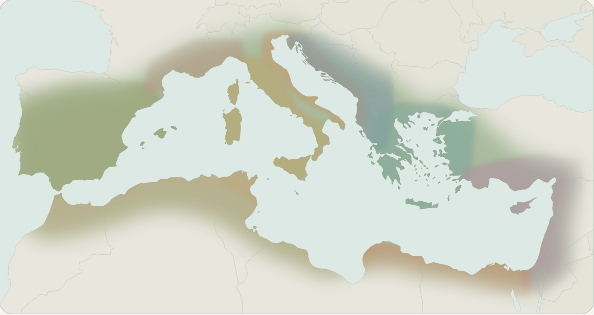

Adria und Balkan. Gemeinsam genießen.
Unser Sortiment gehört zu den Küchen der Adria und des Balkans. Das Mittelmeer ist der weite kulinarische Zusammenhang, der Küsten, Inseln und Hinterländer miteinander verbindet.
Adria
Entlang der östlichen Adria treffen Olivenhaine und Kräuter auf steinige Küsten und geschützte Täler. Olivenöl, Feigen, Kapern und Meersalz prägen viele Küchen; im Neretva-Tal gehören auch Mandarinen dazu.
In unserer Vorratsküche werden daraus Oliven in Salzlake, Fruchtaufstriche, getrocknete Kräuter und weitere haltbare Spezialitäten.
Adria-Produkte entdeckenBalkan & Hinterland
Vom Küstenhinterland bis zu den Tälern und Hügellandschaften des Balkans gehört das Haltbarmachen zur Esskultur: Paprika wird geröstet oder getrocknet, Obst eingekocht und Kräuter werden für den Vorrat bewahrt.
Ajvar, Pflaumenmus und Quitten-Slatko stehen für diese Vielfalt. Kürbiskernöl gehört ebenfalls in unser Sortiment – mit einem Bezug zum nördlicheren Balkanraum, nicht als typisch dalmatinisches Öl.
Balkan-Produkte entdeckenGemeinsame Tische, fließende Übergänge
Adria und Balkan überschneiden sich. Küste und Hinterland tauschen Zutaten und Rezepte aus; kulinarische Räume enden nicht an Staatsgrenzen. Manche Produkte begegnen uns deshalb in beiden Bereichen.
Das Mittelmeer verbindet
Seit Jahrtausenden verbinden Handelswege die Küsten und Inseln des Mittelmeers. Schon lange vor den Römern reisten mit den Menschen auch Zutaten, Rezepte und Traditionen; das Römische Reich verdichtete diese Verbindungen. So entstand eine kulinarische Vielfalt, die bis heute Gemeinsamkeiten über Grenzen hinweg erkennen lässt – und zugleich jeder Region ihren eigenen Geschmack bewahrt.

Nach Produkten stöbern →